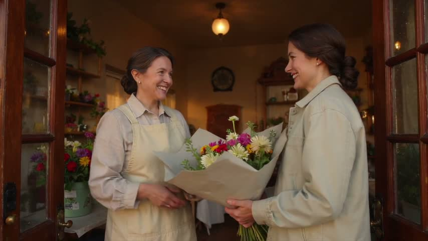
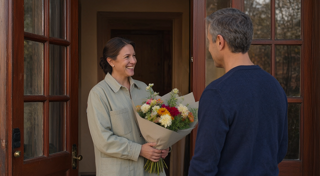
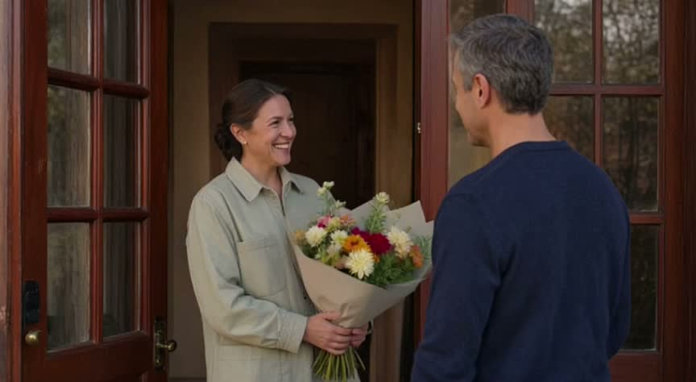
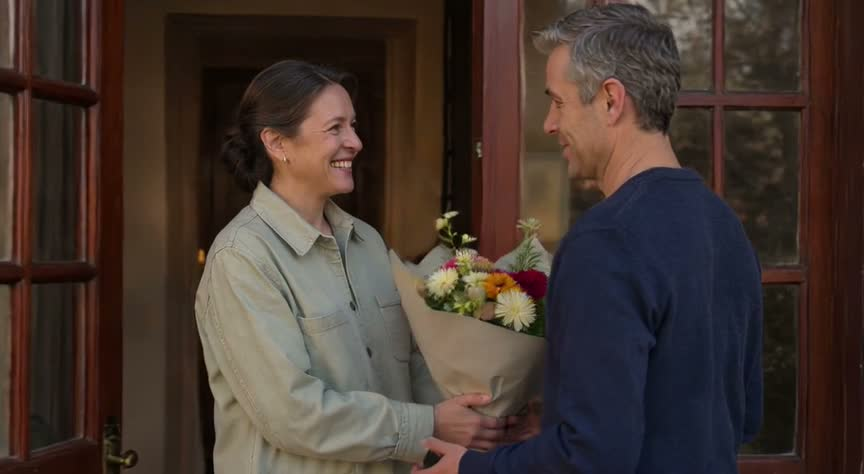
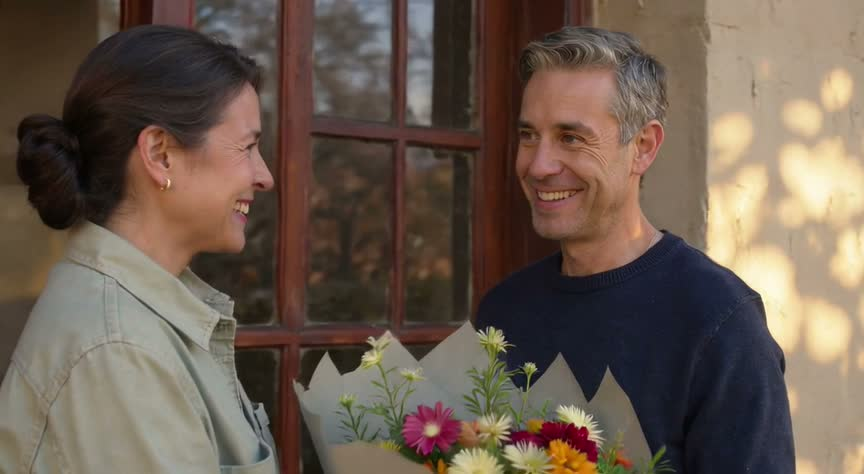
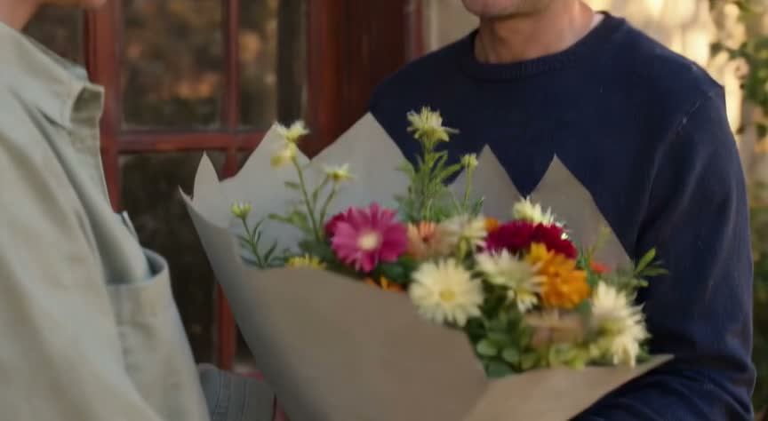
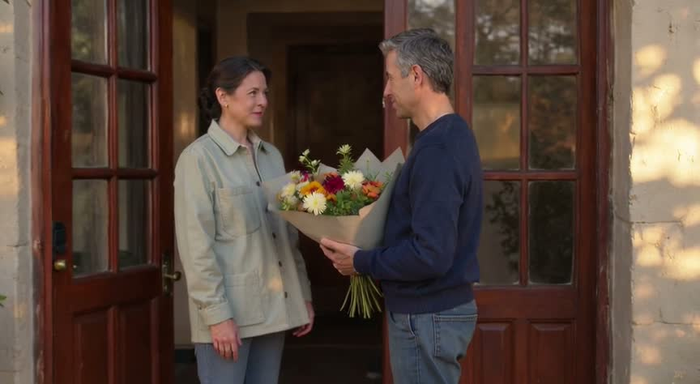
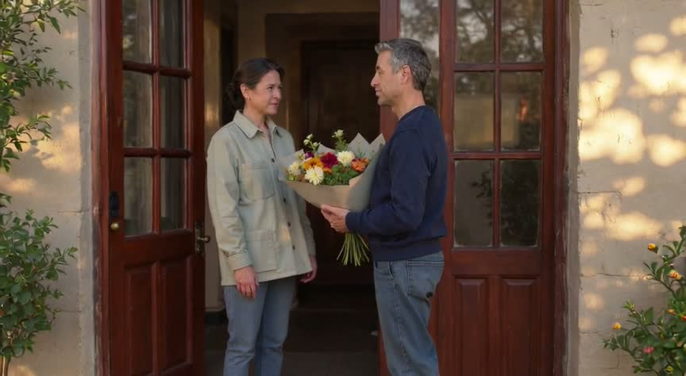

Warm morning light falls across the path to the customer’s home as she approaches the front door, carrying the same bouquet she received at Petal & Stem. Her dark brown hair remains swept into a low, loosely twisted bun, and she wears her small gold-colored earring and light gray-green collared jacket with large patch pockets. The colorful flowers rest in their overlapping pale gray and beige paper, their long green stems exposed below. Her partner, a man with short grey-flecked hair and a navy sweater, greets her at the doorway. She smiles and holds the bouquet out to him. He responds with a warm smile and takes it gently, supporting the wrapped stems as she releases her hold. She stays beside him at the threshold. The moment ends with the two of them together in the morning light, the unchanged bouquet held between them, conveying an affectionate, everyday welcome home.
| kind | fiction |
| people | Customer: woman with dark brown hair swept into a low, loosely twisted bun; a broad smile; small gold-colored earring; light gray-green collared jacket with large patch pockets.; Her partner: man with short grey-flecked hair, wearing a navy sweater. |
| place · time · mood | The path to the couple’s home and their front doorway. · Morning, following the flower-shop scene. · Warm, affectionate, quietly joyful. |
| exact words | none |
| seconds · aspect · sound | 16 s · 16:9 · none (No sound was requested.) |
| progression |
|
| specific · first frame | The customer: dark brown hair swept into a low, loosely twisted bun; small gold-colored earring; light gray-green collared jacket with large patch pockets., The bouquet: white and cream daisy-like flowers, vivid pink and magenta blooms, red and yellow-orange flowers, and green foliage; broad overlapping sheets of pale gray and beige paper, with long green stems exposed below. · In warm morning light, the customer approaches their front door wearing her light gray-green collared jacket with large patch pockets, her dark brown hair in a low, loosely twisted bun and a small gold-colored earring visible. She carries the same white, cream, pink, magenta, red and yellow-orange bouquet with green foliage, overlapping pale gray and beige paper, and exposed green stems; her partner stands at the doorway in his navy sweater. |
raw
{
"carried": [
"The customer: dark brown hair swept into a low, loosely twisted bun; small gold-colored earring; light gray-green collared jacket with large patch pockets.",
"The bouquet: white and cream daisy-like flowers, vivid pink and magenta blooms, red and yellow-orange flowers, and green foliage; broad overlapping sheets of pale gray and beige paper, with long green stems exposed below."
],
"aspect": "16:9",
"kind": "fiction",
"place": "The path to the couple’s home and their front doorway.",
"sound": "none",
"prose": "Warm morning light falls across the path to the customer’s home as she approaches the front door, carrying the same bouquet she received at Petal & Stem. Her dark brown hair remains swept into a low, loosely twisted bun, and she wears her small gold-colored earring and light gray-green collared jacket with large patch pockets. The colorful flowers rest in their overlapping pale gray and beige paper, their long green stems exposed below. Her partner, a man with short grey-flecked hair and a navy sweater, greets her at the doorway. She smiles and holds the bouquet out to him. He responds with a warm smile and takes it gently, supporting the wrapped stems as she releases her hold. She stays beside him at the threshold. The moment ends with the two of them together in the morning light, the unchanged bouquet held between them, conveying an affectionate, everyday welcome home.",
"people": [
"Customer: woman with dark brown hair swept into a low, loosely twisted bun; a broad smile; small gold-colored earring; light gray-green collared jacket with large patch pockets.",
"Her partner: man with short grey-flecked hair, wearing a navy sweater."
],
"first_frame": "In warm morning light, the customer approaches their front door wearing her light gray-green collared jacket with large patch pockets, her dark brown hair in a low, loosely twisted bun and a small gold-colored earring visible. She carries the same white, cream, pink, magenta, red and yellow-orange bouquet with green foliage, overlapping pale gray and beige paper, and exposed green stems; her partner stands at the doorway in his navy sweater.",
"time": "Morning, following the flower-shop scene.",
"seconds": 16,
"exact_words": [],
"mood": "Warm, affectionate, quietly joyful.",
"progression": [
"carries that same bouquet home",
"gives it to her partner, a man with short grey-flecked hair in a navy sweater, at their front door",
"he smiles and takes it",
"end on the two of them with the flowers"
],
"sound_why": "No sound was requested."
}
| person | Woman on the left, apparently a florist, facing the other woman and smiling.: Dark brown hair streaked with gray in a low bun; smiling face with visible laugh lines; small earrings; pale gray-beige collared shirt with rolled sleeves and a cream apron with large front pockets. |
| person | Woman on the right, apparently a customer, holding the bouquet and smiling toward the woman on the left.: Dark brown hair swept into a low, loosely twisted bun; side-profile face with a broad smile; small gold-colored earring; light gray-green collared jacket with large patch pockets. |
| object | Bouquet between the women: White and cream daisy-like flowers, vivid pink and magenta blooms, red and yellow-orange flowers, and green foliage; wrapped in broad overlapping sheets of pale gray and beige paper, with long green stems exposed below. |
| object | Flower displays on the left: Clusters of red, white, yellow, and purple flowers with green leaves, standing in green containers on a counter and shelves. |
| object | Ceiling pendant: Small rounded cream-colored glowing shade suspended from a dark ceiling fitting. |
| object | Wall clock: Dark-framed round clock mounted on the back wall. |
| place · light | Entrance to a small flower shop, framed by open dark wooden, glass-paneled doors with brass-colored handles. Inside are warm beige walls, shelves, flower displays, a dark round wall clock, and wooden furniture. · Warm, soft interior light from a glowing pendant overhead, with brighter natural light on the women and bouquet from the doorway. |

edit prompt for seed · evidence: Customer’s face appears older/different; bun, earring and jacket match. Bouquet colours, layered wrapping and exposed stems match. Doorway partner appears female, not the described man; warm light and setting match.
Widescreen 16:9 film frame, eye level, medium shot: the same woman from the input image, same face, hair and jacket, approaches her front door along the path in warm morning light, smiling broadly. Dark brown low, loosely twisted bun; small gold-colored earring; light gray-green collared jacket, large patch pockets. Same bouquet: white, cream daisy-like flowers, pink, magenta, red, yellow-orange blooms, green foliage; broad overlapping pale gray and beige paper, long green stems exposed. Her partner, short grey-flecked hair, navy sweater, waits in the doorway. Affectionate mood. No text, no watermark.
edit prompt for seed-retry · evidence: Woman resembles reference florist, not customer; jacket and bun match. Bouquet colours, two-tone wrapping and exposed stems consistent. Grey-haired partner wears navy. Woman is inside doorway, partner outside—not approaching home.
First frame: the same woman from the input image, same face, hair and jacket; no aging. Broad smile, dark brown low loosely twisted bun, small gold-colored earring, light gray-green collared jacket with large patch pockets. She approaches her home's front door carrying the same white, cream, pink, magenta, red and yellow-orange bouquet, green foliage, overlapping pale gray and beige paper, exposed green stems. Her partner, a man with short grey-flecked hair in a navy sweater, waits in the doorway. Warm morning light. Widescreen 16:9 film frame, eye level, medium shot. No text, no watermark.
1995 characters (limit 2,000) · 5 beats · 5 shots · code check: length yes exact words yes
FORMATCreate a 16-second continuation of the Petal & Stem advertisement matching the source image. LOOKPreserve the customer’s dark brown hair swept into a low, loosely twisted bun, small gold-colored earring and light gray-green collared jacket with large patch pockets; preserve the bouquet’s white and cream daisy-like flowers, vivid pink and magenta blooms, red and yellow-orange flowers, green foliage, broad overlapping pale gray and beige paper and long exposed green stems; preserve the partner’s short grey-flecked hair and navy sweater, the front doorway and warm morning light. CONTINUITYFive coherent shots with natural edits, the same customer, bouquet and partner throughout, warm and quietly affectionate. BEAT 10–3 seconds: medium-wide framing continuing directly from the source image, the customer in the light gray-green collared jacket carries the bouquet toward the partner at the front doorway, morning light across the path, camera gently following forward. BEAT 23–6 seconds: medium two-shot, the smiling customer with the small gold-colored earring offers the bouquet toward the partner, the doorway behind them, camera sliding gently sideways; the customer still holds the bouquet. BEAT 36–9 seconds: medium close-up, the partner with short grey-flecked hair smiles at the customer, the sunlit doorframe beside him, camera slowly pushing closer. BEAT 49–13 seconds: close two-shot including their hands, the partner in the navy sweater takes the bouquet by its wrapped stems, pale paper illuminated at the threshold, camera easing closer; the partner now holds the bouquet and the customer’s hands are empty. BEAT 513–16 seconds: separate wide establishing shot of the front doorway, the customer and the partner standing still together with the bouquet held between them by the partner, warm light across the threshold, camera easing back into a still composition. HOLDHold this final image for the last two seconds. GRADEGentle warm cinematic grade, unhurried affectionate pacing. NEGATIVESNo subtitles, no text overlays, no voiceover.
beats as the writer listed them
| # | range | shows |
|---|---|---|
| 1 | 0–3 s | Continuing the start frame, the customer carries the bouquet toward the partner at the front doorway; gentle forward follow. |
| 2 | 3–6 s | The customer offers the bouquet toward the partner while still holding it; gentle lateral slide. |
| 3 | 6–9 s | The partner smiles at the customer; slow push-in. |
| 4 | 9–13 s | The partner takes the bouquet by its wrapped stems; the partner now holds the bouquet and the customer’s hands are empty; gentle push closer. |
| 5 | 13–16 s | Separate establishing shot of the customer and the partner standing still at the doorway, the partner holding the bouquet between them; ease back, then hold the final two seconds. |
The MCP has not been run on this brief.
guide.md as given to the writer
# The operational prompt (text-to-video)
The Magic Hour guide says: specify the subject, one action, camera move, framing and mood; request only audio and
duration the model supports; then review the actual result. The prompt that works is ONE prose paragraph, under 2,000
characters, in this order:
1. FORMAT: the duration, the kind of piece, the subject, the aspect, in one sentence.
"Create a 16-second cinematic advertisement for Petal & Stem, a small neighbourhood flower shop. Widescreen 16:9."
2. LOOK: medium, light, mood, the texture of the world, in one sentence. For action, the look line also carries the
ENERGY in plain words ("tight, fast-paced editing, roaring engines, cars accelerating hard, streetlights streaking
past"): the model renders the pace it is told, and a race described calmly comes out slow.
"Photorealistic, intimate, warm natural dawn sunlight, soft golden highlights, authentic lived-in neighbourhood."
3. CONTINUITY: how many shots, and what stays the same across them, in one sentence.
"Four coherent shots with natural edits, same florist, shop and bouquet throughout."
4. BEATS: timed ranges that together cover the whole duration, in order. Each beat, in this order: the time range,
the framing, the subject with one identifying detail, ONE action, one environment detail, the camera or lens.
"0–4 seconds: exterior medium-wide shot at dawn, an adult florist in a sage-green apron unlocks and opens the
wood-and-glass shop door, warm sunlight on the flower buckets beside the entrance."
One action per beat. Never two things happening. Never a thing that must appear later mentioned early.
The request's own verbs are the beats' actions and each gets its own beat: "arranges a bouquet" is a beat of hands
placing stems, and wrapping is a different action; do not merge two of the request's actions into one beat.
When possession changes, the beat ends with the new state stated plainly: "the customer now holds the bouquet, the
florist's hands are empty".
The last beat is a separate establishing shot with no new action: the place alone, or the people standing still.
Every beat has a camera MOVE (push, slow orbit, lateral slide, ease back, handheld follow), never "stationary" or
"locked-off" except the final hold. Name the key object concretely once (blush pink roses, cream flowers, brown
kraft paper), not "a bouquet"; the model renders nouns it is given.
A beat is 3–6 seconds, so a 16-second clip has 3–5 beats and a 30-second clip 5–8. Two-second beats make a
cut every two seconds, which the model renders as a jumble; the shot count in CONTINUITY equals the beat count.
5. EXACT WORDS: any lettering the video must show, quoted once, inside the beat where it is seen.
"clear tasteful shop sign reads exactly 'Petal & Stem'."
6. SOUND (only when audio is on): ambient, or the character of music, or the spoken lines quoted with their time
range and who speaks. Narration and dialogue are the expensive part of the budget; keep them short.
7. HOLD: the last beat ends on a still, readable image. "Hold on the storefront for the final two seconds."
8. GRADE: colour treatment and pacing, one short sentence. "Gentle cinematic colour grade, calm uplifting pacing."
9. NEGATIVES: one line, last, only what the model would otherwise add. "No voiceover, no subtitles, no text overlays."
Quality words are descriptive, never technical: cinematic, photorealistic, shallow depth of field, natural hands and
anatomically correct movement, realistic textures. No resolution words, no "8k", no seeds, no camera brands.
Never: shot-list headings, a separate negatives block, a constraint on every sentence, "do not show X" for things that
appear later, repeating a sentence, a sign mentioned in a beat where it must not be seen.
Budget: about 450 characters go to format, look, continuity, hold, grade and negatives. The rest is beats, about 200
characters each. Compress the story into the beats; do not paste it.
# Image-to-video (a start frame is supplied)
Same slots, same order, two changes:
- FORMAT shrinks to the duration and "matching the source image" (the aspect is the image's).
- LOOK becomes PRESERVE: name what the image already fixes and must stay: "Preserve the woman's face, dark hair in a
low bun and cream jacket, and the bouquet of yellow, magenta, cream and red flowers in pale paper, exactly as in the
image; keep the morning light and the doorway."
- The first beat describes the image as it is and the first motion out of it, so the model continues the picture
instead of cutting away. Later beats may cut, with the continuity sentence naming the same people and the bouquet by
the same words every time.
# When people carry the scene (a handoff, a conversation, a reunion)
The MCP's scene 2 clip read as more alive than ours with the same still route. The differences were in the prompt:
- ONE continuous shot with a very slow push in, not five cuts in 16 seconds. On image-to-video every cut abandons the
start frame; one shot keeps the faces and lets a performance develop.
- Performance verbs and eye lines in every beat: "exchanging warm eye contact", "he smiles warmly and reaches out with
both hands", "they exchange affectionate smiles", "she steps close beside him". Behaviour, not inventory.
- A physically ordered action: "only after he has a firm grip does she release it".
- PRESERVE is three anchors per person (hair, one garment, one detail) and one line for the object, said once. The
identity is in the start frame; a 600-character inventory repeated in every beat buys nothing and starves the beats.
- End on the faces: "a stable medium two-shot showing both faces and the bouquet, hold three seconds", not a wide
establishing shot of people standing still.
- Framing: the seed still should be a medium shot where faces are large enough to act; a medium-wide doorway reads
as staging.
| call | image-to-video · model ltx-2.5 · 16 s · 16:9 · 480p · audio off · start frame seed-retry.png |
| credits · time | 384 credits · 40 s wall · rendered 16 s |
| prompt sent | the operational prompt above, unchanged |
frames: first, each beat's middle, last







| beat | subject present | action seen | evidence |
|---|---|---|---|
| 1 | yes | unclear | The customer holds the bouquet facing the partner at the doorway. The framing moves closer between the first frame and 1.5 s, but forward walking toward the partner is not established by the sampled frames. |
| 2 | yes | unclear | At 4.5 s the bouquet is between them and the viewpoint has shifted laterally toward the partner's face. Their hands are cropped out, so offering it while retaining her grip is not directly verifiable. |
| 3 | yes | unclear | The partner smiles in the 4.5 s sample, but the 7.5 s sample crops out most of his face and concentrates on the bouquet. A smile during the requested 6–9 s interval cannot be confirmed. |
| 4 | yes | yes | At 11 s the partner supports the bouquet around its lower paper wrapping. Subsequent wide frames confirm that he holds it independently and the customer's hands are empty. The precise grasp-and-release transition is not fully shown in these samples. |
| 5 | yes | yes | A separate wider doorway shot shows both standing still, with the partner holding the bouquet between them and the customer's arms lowered. The framing eases farther back toward the final frame, but the required final two-second hold is not supported. |
| exact words | none required |
| identity vs the reference | The customer yes The customer retains the reference's facial appearance, dark brown hair swept into a low twisted bun, small gold-colored earring, and light gray-green collared jacket with large patch pockets. The bouquet yes The bouquet retains white and cream daisy-like flowers, vivid pink and magenta blooms, red and yellow-orange flowers, green foliage, overlapping pale gray and beige wrapping, and exposed long green stems. Individual flower positions vary, but its defining appearance remains consistent. |
| same people and place | yes |
| last frame holds | no |
| artifacts | none noted |
| failures | the final two seconds hold one still image with no new action |
clip-2.mp4 · review FAIL · state record: Customer: woman with dark brown hair swept into a low, loosely twisted bun; a broad smile; small gold-colored earring; light gray-green collared jacket with large patch pockets.; Her partner: man with short grey-flecked hair, wearing a navy sweater. at The path to the couple’s home and their front doorway., Morning, following the flower-shop scene.; words seen: none; last frame frames/clip-2-last.jpgraw
[
{
"clip": "clip-2.mp4",
"seconds": 16,
"people": [
"Customer: woman with dark brown hair swept into a low, loosely twisted bun; a broad smile; small gold-colored earring; light gray-green collared jacket with large patch pockets.",
"Her partner: man with short grey-flecked hair, wearing a navy sweater."
],
"place": "The path to the couple’s home and their front doorway.",
"time": "Morning, following the flower-shop scene.",
"mood": "Warm, affectionate, quietly joyful.",
"words_seen": [],
"identity": [
{
"evidence": "The customer retains the reference's facial appearance, dark brown hair swept into a low twisted bun, small gold-colored earring, and light gray-green collared jacket with large patch pockets.",
"carried": "The customer",
"same_as_reference": "yes"
},
{
"evidence": "The bouquet retains white and cream daisy-like flowers, vivid pink and magenta blooms, red and yellow-orange flowers, green foliage, overlapping pale gray and beige wrapping, and exposed long green stems. Individual flower positions vary, but its defining appearance remains consistent.",
"carried": "The bouquet",
"same_as_reference": "yes"
}
],
"last_frame": "frames/clip-2-last.jpg"
}
]